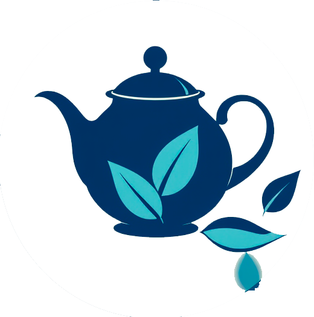

<header>

  <nav class="navbar navbar-expand-lg bg-body-tertiary fixed-top">
     <div class="container-fluid">
        <a class="navbar-brand">
          
        </a>
        <button class="navbar-toggler" type="button" data-bs-toggle="collapse"
           data-bs-target="#navbarSupportedContent" aria-controls="navbarSupportedContent" aria-expanded="false"
           aria-label="Toggle navigation">
           <span class="navbar-toggler-icon"></span>
        </button>
        <div class="collapse navbar-collapse" id="navbarSupportedContent">
           <ul class="navbar-nav me-auto mb-2 mb-lg-0">
              <li class="nav-item">
                 <a class="nav-link " [routerLink]="''" aria-current="page" routerLinkActive="active" [routerLinkActiveOptions]="{exact:true}">Главная</a>
              </li>
              <li class="nav-item">
                 <a class="nav-link" [routerLink]="'/catalog'" routerLinkActive="active" >Каталог</a>
              </li>


           </ul>
           <form class="d-flex" role="search">
              <input class="form-control me-2" type="search" placeholder="Поиск чая" aria-label="Search"
              [(ngModel)]="searchQuery" name="searchQuery" required>
              <button class="my-style__btn btn btn-outline-success" type="button" (click)="onSearch()">Найти</button>
              <button class="my-style__btn btn btn-outline-danger " type="button" (click)="clearSearch()">Сбросить</button>
           </form>
        </div>
     </div>
  </nav>
</header>
